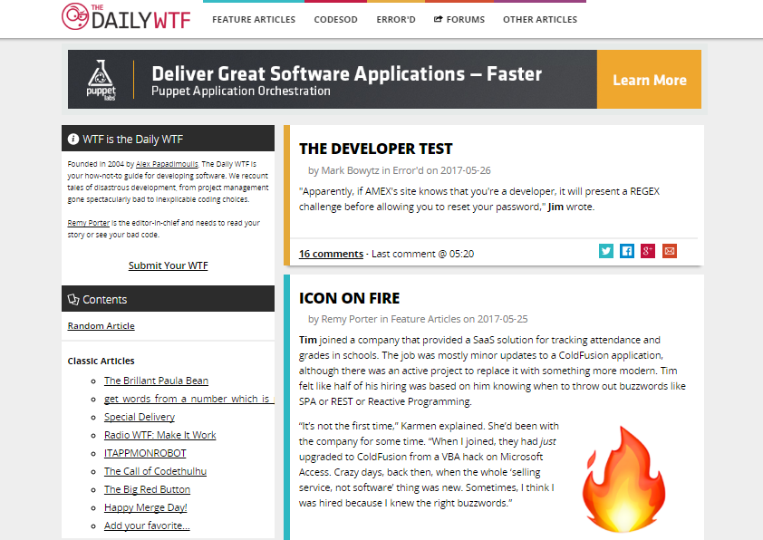

The Daily WTF
The Daily WTF is a coding how-NOT-to site that publishes reader submitted software development horror stories. In 2015, they contracted out for a facelift. While they were happy with the design, the new site was slow and poorly constructed. I was asked to replicate new look and functionality, but to use CSS to replicate most of the site's JS functionality in order to decrease load times.
- Responsive
- LESS
- CSS
- HTML